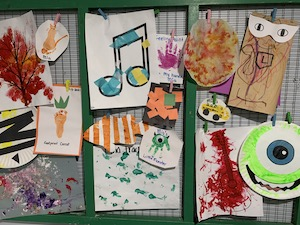

A hobbyist software license that optimizes for maintainer happiness and human connection. Non-human legal entities such as corporations and agencies aren't allowed to participate.
The Human Software License is structured as a permissive license like MIT or BSD, but with one extra restriction:
You may not use this software on behalf of an organization, company, or other non-natural person.
Everything else is allowed including commercial activity and redistribution.
This license was created by myself, a software engineer with no legal guidance, for use with my own personal projects. It follows the Normally Open License Template from Kyle E. Mitchell, which is in turn heavily based off the Blue Oak Model License. You're welcome to use it for your own projects, if you think that's a good idea.
back to mozz.us